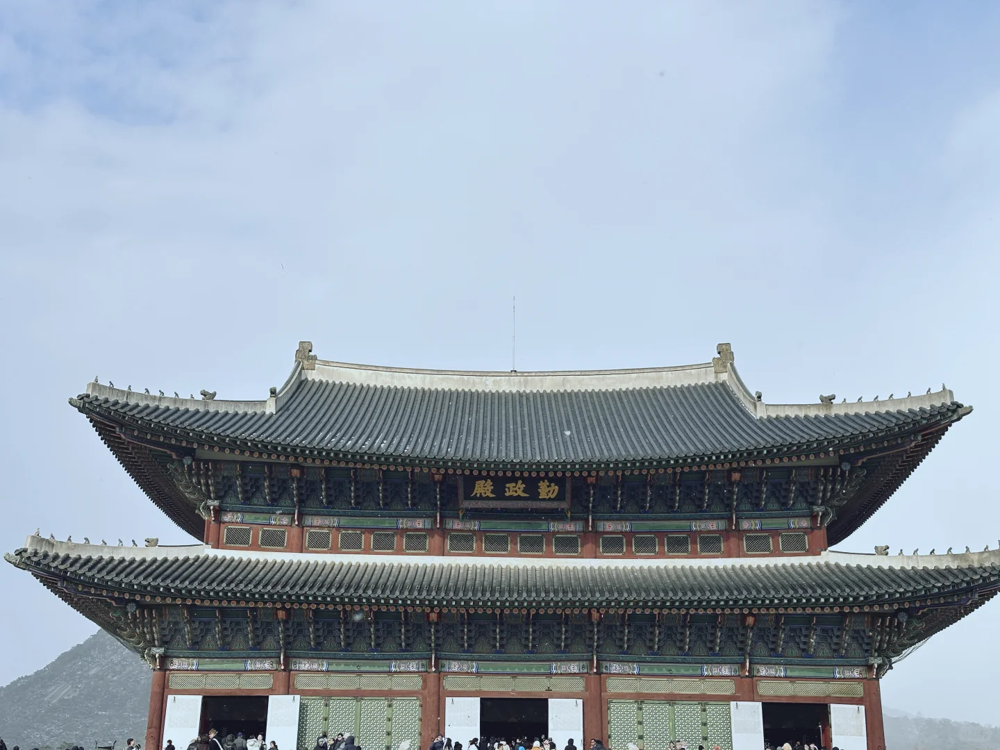
景福宫勤政殿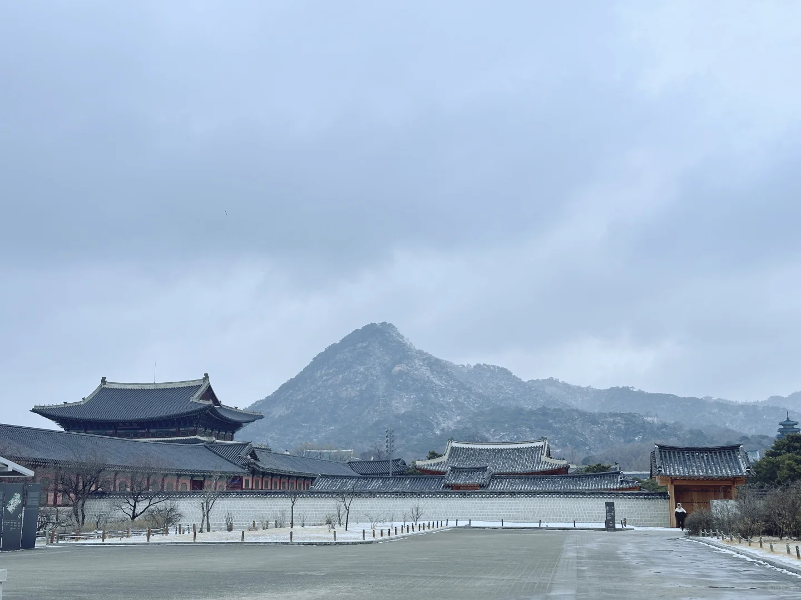
景福宫+北岳山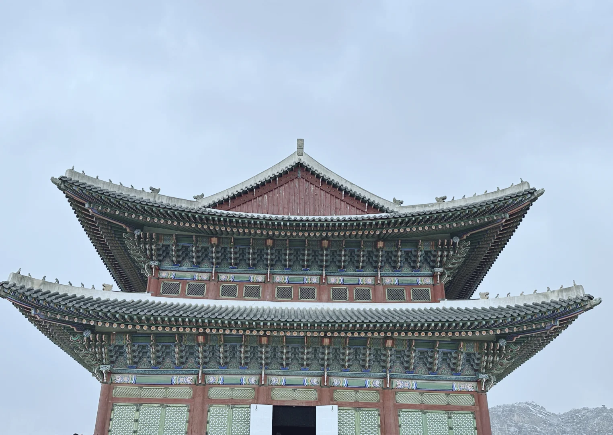
景福宫殿阁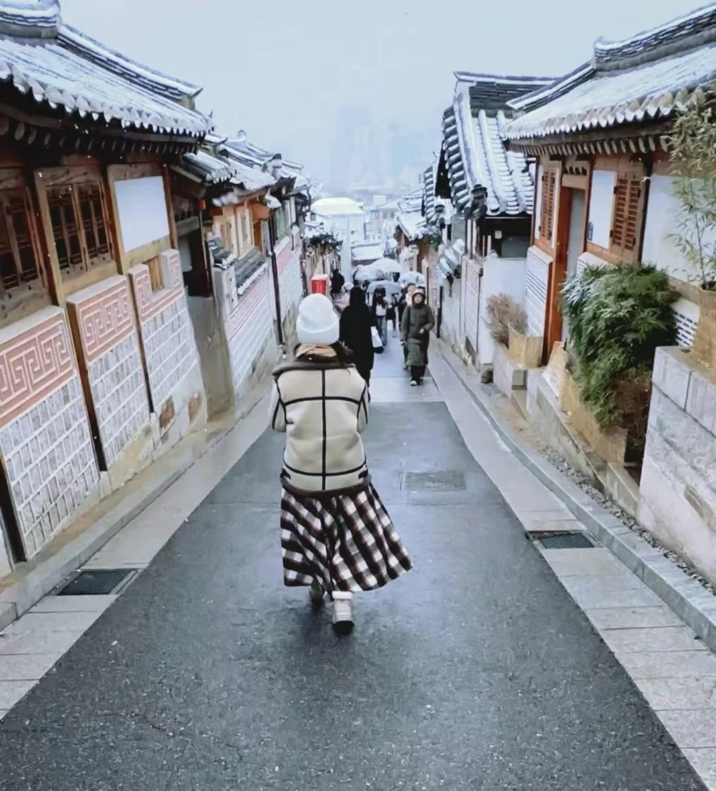
北村韩屋村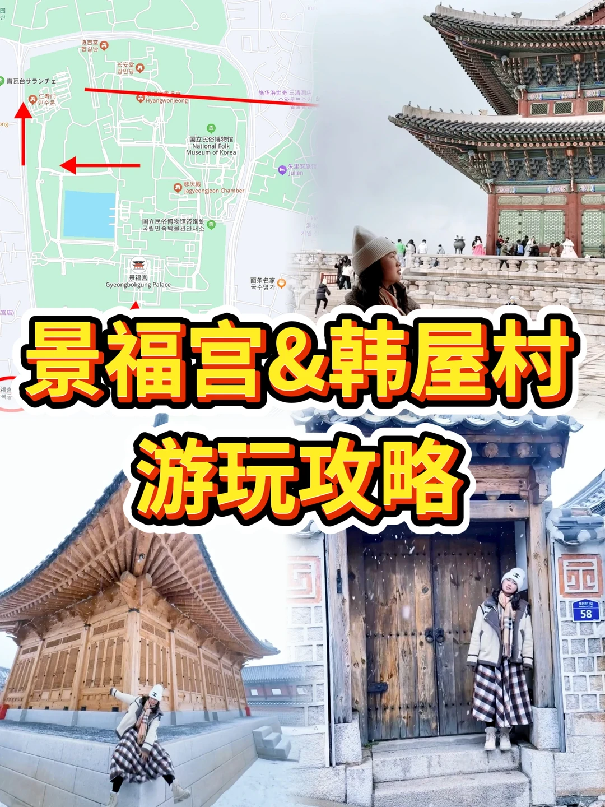
景福宫&韩屋村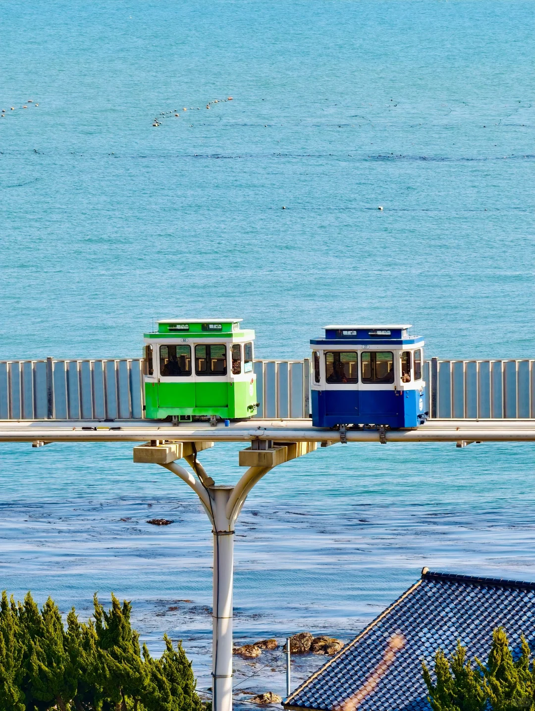
胶囊小火车·海边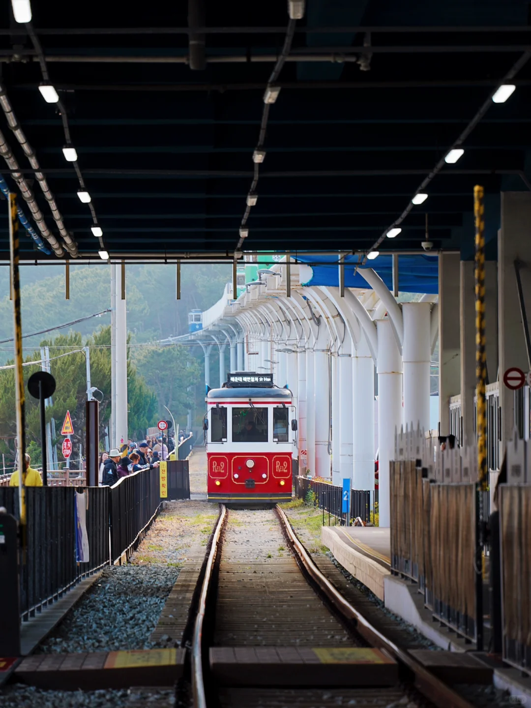
胶囊小火车·进站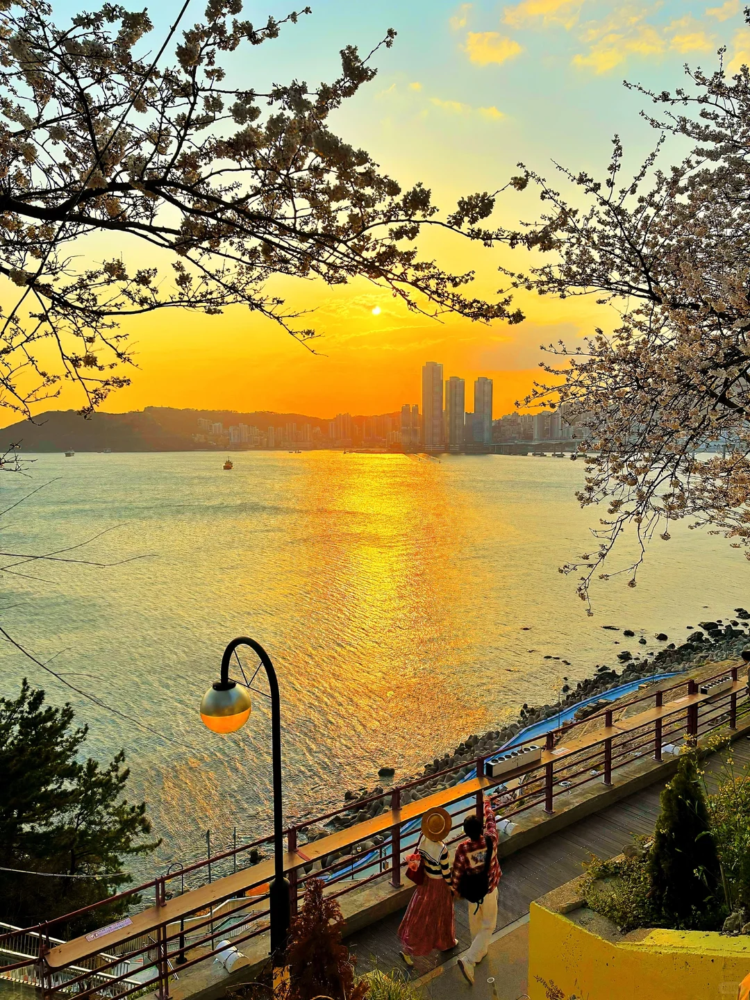
白浅滩·日落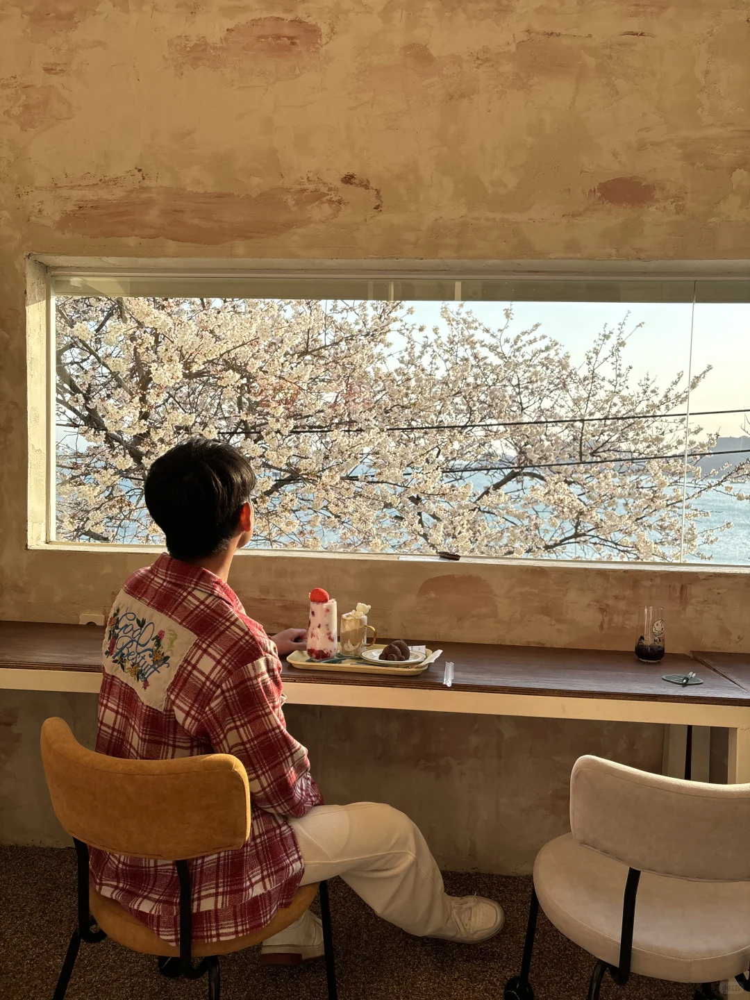
海边咖啡厅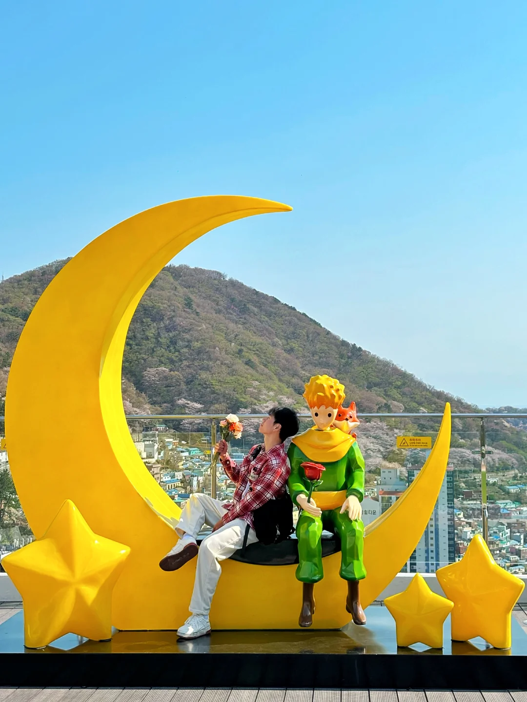
甘川文化村·小王子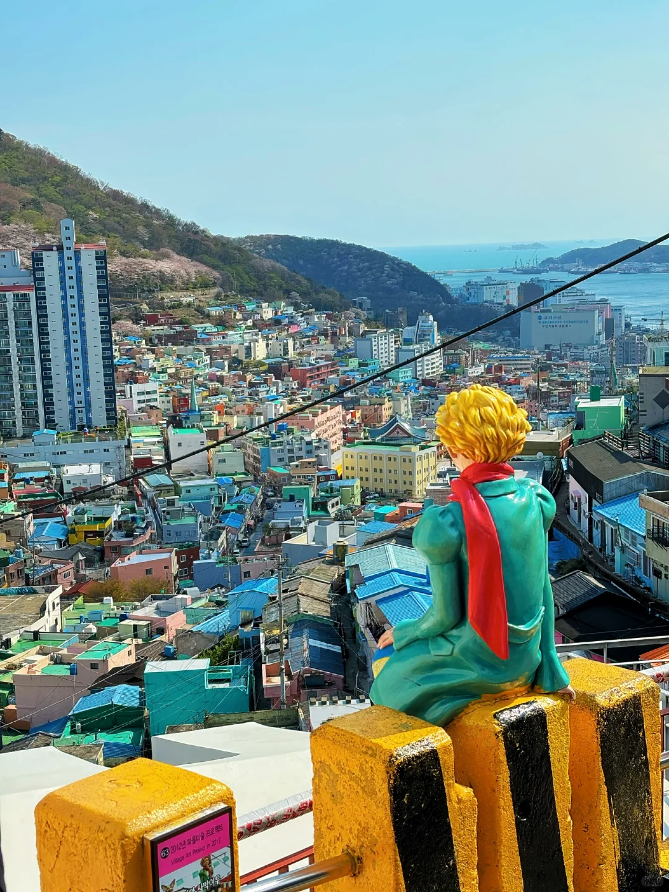
小王子俯瞰全村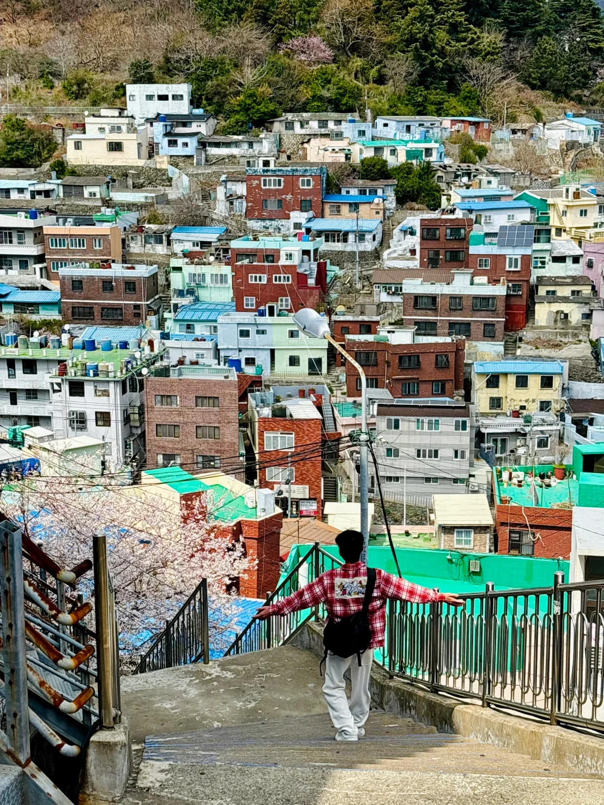
甘川彩色阶梯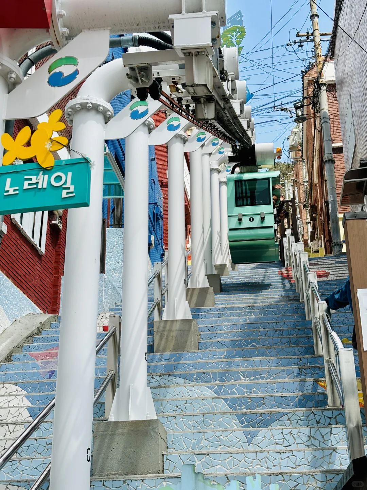
192阶梯小电车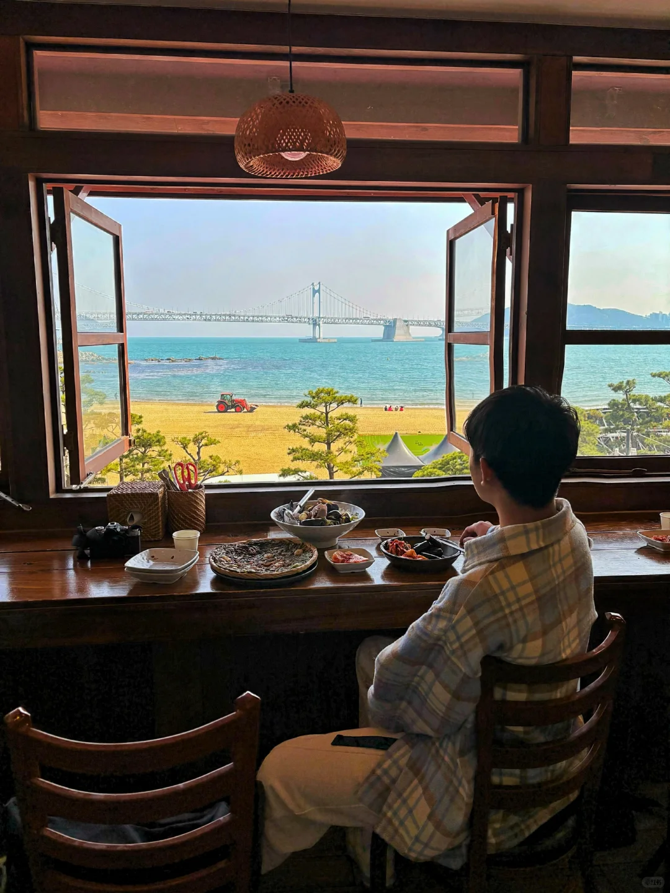
广安里大桥海景| 项目 | 费用/人 | 备注 |
|---|---|---|
| 机票往返 | 1000-1500 | 提前买！ |
| 住宿4晚 | 650-800 | 首尔170/晚，釜山160/晚 |
| 签证 | 400 | 单次，提前办 |
| 首尔↔釜山 | 130-250 | 大巴便宜/KTX快 |
| 釜山通行证48h | ~200 | 含缆车/游艇/Luge等 |
| 胶囊小火车 | 100-200 | kkday提前1月 |
| 餐饮5天 | 800-1200 | 人均一顿50-80 |
| 电话卡 | 50 | 淘宝LGU卡 |
| 合计 | 3500-4800 | 不含购物 |